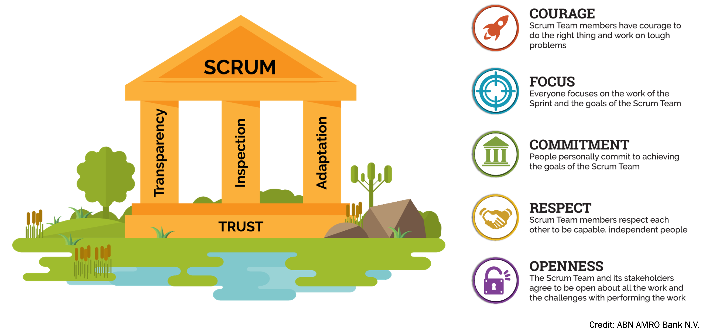

What is scrum?
If you are just getting started, think of Scrum as a way to get work done as a team in small pieces at a time, with continuous experimentation and feedback loops along the way to learn and improve as you go. Scrum helps people and teams deliver value incrementally in a collaborative way. As an agile framework, Scrum provides just enough structure for people and teams to integrate into how they work, while adding the right practices to optimize for their specific needs. You may be thinking, that sounds great! But, how do I get started?
It starts with understanding the Scrum framework which is defined in The Scrum Guide and was first introduced to the world in 1995 as a better way of team collaboration for solving complex problems. The Scrum framework is fairly simple being made up of a Scrum Team consisting of a Product Owner, a Scrum Master and Developers, each of which have specific accountabilities. The Scrum Team takes part in five events and produces three artifacts. Scrum co-creators Ken Schwaber and Jeff Sutherland wrote and maintain The Scrum Guide, which explains Scrum clearly and succinctly. The guide contains the definition of Scrum, describing the Scrum accountabilities, events, artifacts and the guidance that binds them together.

So, why is it called Scrum? People often ask, “Is Scrum an acronym for something?” and the answer is no. It is actually inspired by a scrum in the sport of rugby. In rugby, the team comes together in what they call a scrum to work together to move the ball forward. In this context, Scrum is where the team comes together to move the product forward.
Scrum is an empirical process, where decisions are based on observation, experience and experimentation. Scrum has three pillars: transparency, inspection and adaptation. This supports the concept of working iteratively. Think of Empiricism as working through small experiments, learning from that work and adapting both what you are doing and how you are doing it as needed.
One critical Scrum Team characteristic that binds all of the elements together is Trust. If Trust is not present on a Scrum Team, there will likely be tension and bottlenecks in the way of getting work done. The Scrum Values are also critical for Scrum Teams to adhere to as they help to guide how you work and drive trust . The Scrum Values of Courage, Focus, Commitment, Respect, and Openness, are all important elements that Scrum Team members must consider when working together.The Scrum Values are particularly important in environments where experimentation is core to making progress.
In a nutshell, Scrum requires an environment where:
- Increments of valuable work are delivered in short cycles of one month or less, which are called Sprints. Ongoing feedback occurs during the Sprint, allowing for inspection and adaptation of the process and what will be delivered.
- The Scrum Team has a Scrum Master, a Product Owner and Developers, who are accountable for turning the selection of the work into an Increment of value during a Sprint.
- The Scrum Team and other members of their organization, business, users or customer-base known as stakeholders, inspect the results of the Sprint and adjust for the next one.
Learn more about the basics of Scrum in this Introduction to Scrum video series.
What makes up the Scrum Framework?
As already mentioned, there are accountabilities, events and artifacts that make up the Scrum Framework as well as other attributes that support Scrum. Read the Scrum Glossary to explore the terminology within Scrum or explore the key elements below:
Scrum Accountabilities
The people on the Scrum Team:
Scrum Events
Events that create regularity and minimize other meetings Sprint - short cycles of one month or less, during which the work is done; the Sprint contains all of the other Scrum events; a new Sprint starts immediately after the conclusion of the previous Sprint Sprint Planning - event dedicated to planning out the work that will take place during the Sprint Daily Scrum - event held every day where the Developers inspect the progress toward the Sprint Goal, uncover anything that may be getting in their way and adapt accordingly Sprint Review - event held at the end of the Sprint where the Scrum Team and key stakeholders review what was accomplished in the Sprint and what has changed in their environment; next, attendees collaborate on what to do next Sprint Retrospective - the Scrum Team gets together during this event to talk about how the last Sprint went and identify the most helpful changes to improve their effectivenessScrum Artifacts
Product Backlog:
an evolving, ordered list of what is needed to improve the product; it is the single source of work undertaken by the Scrum Team. Commitment: Product Goal - the target the team plans against
Sprint Backlog:
a highly visible list of work that is the Developer's plan for the Sprint, which may evolve as they learn. Commitment: Sprint Goal - the single objective of the Sprint
Increments:
small pieces of work that serve as concrete stepping stones toward the Product Goal. You can deliver as often as needed during the Sprint and are not limited to only one release per Sprint. Commitment: Definition of Done - the description of what it takes for an Increment to be considered complete